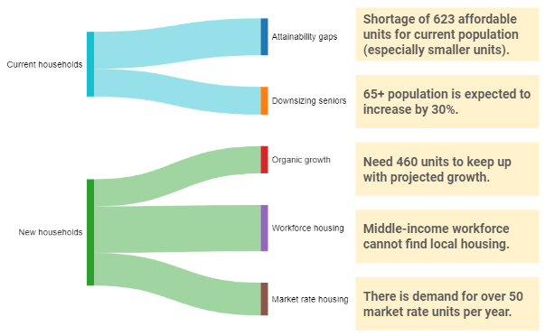
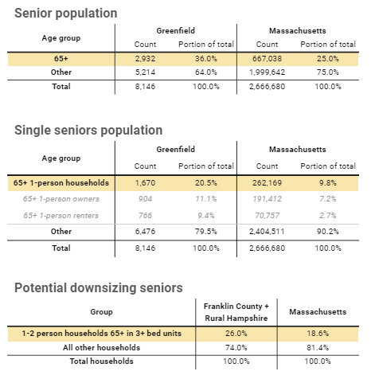
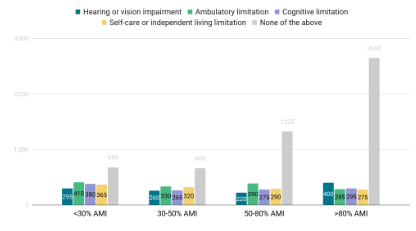
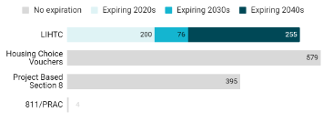
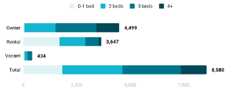
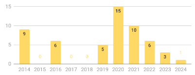
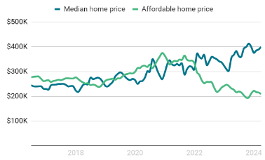

Housing Study |Overview | Indicators | Solutions | Next steps
Housing Study |Overview | Indicators | Solutions | Next steps
Housing Study |Overview | Indicators | Solutions | Next steps
This dashboard was created by CommunityScale for the City of Greenfield. The objective of this dashboard is to outline the plan's objectives and priorities, share key observations and findings about the local housing landscape, and highlight recommended strategies to increase housing production and address affordability challenges.
 Overview
Overview
This housing needs assessment combines extensive quantitative data analysis with consideration of the community’s goals for its future to produce a 10-year housing production target.

Build new housing for all income levels.

Provide affordable options for seniors.

Fill affordable housing gaps, especially "missing middle".
The Housing Plan builds on progress made over the past several years, including through the following community planning efforts:

 People
PeopleThe following section profiles the people of Greenfield, detailing characteristics such as income, employment, household structure, and cost burden. These indicators combine to describe the local population's housing needs and preferences which inform this report's recommended strategies for new housing production to meet demand and fill gaps in affordability and attainability.
Greenfield’s population has been rapidly aging over the past decade, with the 65+ age group growing while other age groups shrink. If these trends continue through the next decade, about a third of the population will be over 65+ with fewer adults at ages associated with starting and raising families. In general, younger households are more likely to prefer family-oriented housing and neighborhoods where as older households may have a broader range of preferences and priorities, including senior options.

This chart illustrates trends in population by age cohort, both historic and projected. The projection is based on recent trends extended. Depending on economic, policy, and other conditions, the actual future age distribution may vary over time.

Greenfield’s population includes a much higher proportion of seniors than the state overall. More specifically, Greenfield has much higher rates of 1-person senior households, including nearly 4 times the rate of renters. Many households in this group might be interested in alternative housing options more tailored to a single seniors’ needs, incomes, and lifestyle preferences. The broader Greenfield region has substantially more small senior households living in larger units than the state average. Many households in this group might be interested in downsizing to smaller units in more walkable locations near amenities, services, and transit.
The following analysis examines household characteristics and housing need in terms of household incomes relative to the local Area Median Income (AMI). For example, households within the "60-80%" group earn between 60% and 80% of the HUD-established AMI for the metro area. Each household AMI group has a different need for monthly housing costs.

These households typically represent a community’s “middle class” workforce, including public safety officers, skilled nurses, educators, and municipal employees. Greenfield’s low proportion of 80-120% AMI households is likely a result of limited available housing options at price points this group can afford, requiring they live elsewhere.
Greenfield’s household population has grown slowly since 2010. In terms of relative income levels, most of the growth has been concentrated among lower-income households. The >120% AMI group has also grown while middle-income groups have shrunk.


These charts break down socioeconomic and demographic indicators by income in terms of AMI level.
Greenfield’s lowest income groups are its most racially diverse, especially the <30% AMI group. Other income levels are relatively consistent in their ratios of white and non-white households.

Families with children are concentrated in the >120% and <80% AMI groups. Nonfamily households are predominantly low-income (this group includes one-person households). Families without children (such as couples) are most common at the >120% AMI level.

Most households in the >65 age group have incomes below 60% AMI. Households between 25-64 are most prevalent in the >120% AMI but also particularly numerous in the 30-60% and <30% AMI groups. The small group of youngest households (<25 years) are relatively evenly distributed across all AMI levels.

Greenfield’s resident population includes many people with disabilities that may restrict their housing choices. Lower-income households are more likely to include people with one or more of these disabilities but there are significant numbers across the income spectrum. This chart summarizes people with disabilities by income level. People with multiple disabilities are counted multiple times in this dataset.

Households are cost burdened when paying more than 30% of their income on housing costs. They are considered severely cost burdened when these costs exceed 50% of their income. For renters, this includes lease rent and utilities. For homeowners, this includes mortgage costs, property taxes, insurance, utilities, and any condo fees.

In Greenfield, most low-income households are cost burdened. Most households earning >80% AMI are not cost burdened.
PlaceThe following section profiles Greenfield’s housing stock and affordability, detailing characteristics such as structure type, bedroom count, and development timeframe as well as household costs and market pricing for local rental and ownership units.

The local housing stock includes a mix of committed affordable housing supported by federal programs such as Low Income Housing Tax Credits (LIHTC) and Housing Choice Vouchers. For households with particularly low incomes, these units can represent one of the only housing options available to them.

This graph inventories the local housing stock in terms of each unit's structure type, a characteristic defined as the number of units in the building that contains a given unit.

This graph inventories the local housing stock in terms of bedroom count by unit by tenure. The majority of Greenfield’s housing units are two bedroom or larger, especially among ownership units.
Nearly three quarters of Greenfield’s housing production took place before 1970 with very little new construction in recent years. This table chronicles the community's development history, indicating decades with relatively more or less construction activity. 2020 or later is approximate as new housing units are completed.

Building permitting history is a proxy for construction activity over time. Greenfield has seen very little new permits during the past decade. While there are some proposed developments on the horizon, none have reached the building permit stage yet.


This chart compares the median listing price in Greenfield with the home value affordable to a household earning the median household income. A wider gap means higher barrier to entry for first-time homebuyers and increased risk that an existing resident might be priced out of the community if they choose or need to move to a different house.
Comparing the needs of current residents with the current housing stock reveals potential misalignments between supply and demand.
This chart simulates the unit mix today’s local population would choose if all households could move into units that match their likely bedroom preferences and willingness to pay.

These charts compare this “need” to the current housing stock. Positive gaps indicate under-supply; negative gaps indicate oversupply.

This is an instructive but largely hypothetical analysis due to the scale of the gap and the challenge of delivering new affordable housing in large quantities.

CommunityScale is a pioneering urban planning and spatial data analysis company serving clients across the United States.
Follow CommunityScale on LinkedIn and Twitter/X. This dashboard is open source MIT license - 2024 CommunityScale